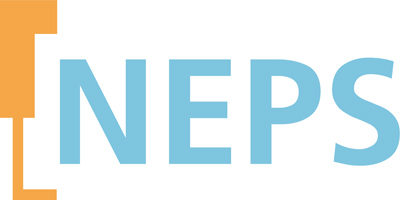
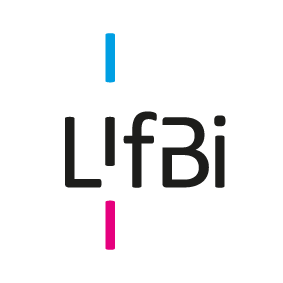

The National Educational Panel Study (NEPS) is the largest long-term educational study in Germany. In seven starting cohorts, the development of competencies and the educational trajectories of a total of more than 70,000 participants are monitored - from early childhood to old age.
I am responsible for the questionnaire developmnet, data collection for Starting Cohort 8 and the coordination of some collaboration projects.
What is NEPS:  Who is LIfBI: 
I worked as postdoc research associate for NEPS and was responsible for the optimization of several questionnaires such as teacher/principal questionnaire, student contextual scales, etc. Quality control, coordination of collaboration with internal research groups (IFS from TU Dortmund) and external collaborators such as IQB, Infas, IEA, project management are also part of my work.
NEPS data is open to every researcher, but is also complex like a maze given its huge covarage of concpets, generations, data waves, etc. My advantages working in developing tools for NEPS are that I am more familiar with data structure itself. So using tools such as R and Mplus, I was able to explore and analyze the data. Fruitful collaboration with others yield to 6 publications within the following year I left LIfBi.
One of the task for me was also to optimize the UI of the online survey. Tasks included the coordination of some discussion among RGs on topics such as responsive design of questionnare UI, arrangement of options/answers, design of user navigation for different user groups(student or principal), etc.
For starting cohort 8 we would like to investigate some new concepts, which should be adapted from existing scales. Besides questionnaier, we also needed to collaborate with Infas in order to adapt the interview schema for individual follow-up studies to new needs and requirements.
For such a huge project like NEPS, understanding the needs of stakeholders and the background is essential. Normally we do not need to develop new concepts and scales, but we do need evaluate the quality or performance of a specific scale and adapt it if required. Estimating cost of an item(time, space, etc.) and prioritizing concepts were also crutial for decision making. For the telephone-interview study with individuals who dropped out the longitudinal study, several issues were challenging: data privacy (with teenagers under 14 year-old), branching logic or switch questions design. I worked with experienced colleagues from Infas and data privacy group, and have overcome the challenges.
New concpets were integrated into the study with satisfying quality, the interview study has also been successfully implemented.
As postdoc we needed papers. But They are not only papers. There are thousands of insights hidden in the sand of data. The objectives of this part are to understand the large-scale longitudinal multilevel data, to clean and repair the data (eg.for the case when class ID was missing), to dig out possible relationship, to find the most suitable methods, to present the findings to others.
Multiple statiscal methods/models were applied (eg. Cross-lagged panel model, Random Intercept-CLPM, chang-on-change model, latent growth curve model, latent profil analysis, etc.) The following are some examples.
The same codes or methods (cluster or factor analysis, multi-level regression, predictive modeling, mixed effect modeling, etc.) can be used for topics such as: Product Demand Forecasting, Brand Perception and Positioning Customer or User Satisfaction and Loyalty Analysis,sentiment tracking, segmentation, Attitudinal and Behavioral Analysis,etc.
Sample publications based on the multi-level large-scale data analysis: how motivation of individuals and their perception of environment influenced their achievement
NEPS study recruite voluntary participants. Given the long list of concepts and huge crowd of stakeholders, arranging concepts in a meaningful and inviting way is crutial. More important is of course, the UI design of the online survey platform.
So there were some UX relevant decisions to make: if we should use horizontal or vertical arrangement of options/answers, if this will be changed based on option number, types, devices, if we should set some time-out principle, if we should use Navi bar which allows exit, etc. The decisions should be made quickly as possible,but budget is little. So mainly we relied on secondary research, previous literature with similar contexts and target groups were summarized.
After some conclusion summary from literature, analysis of the small sample testing data, we were able to make decisions and optimize the UX UI of the surveys.